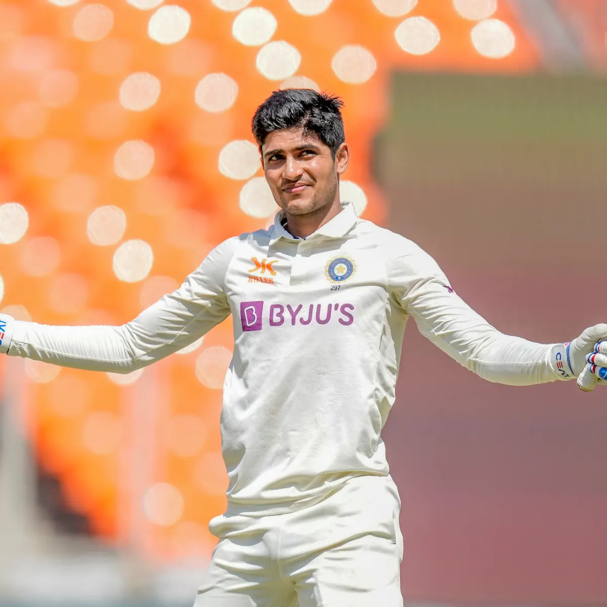
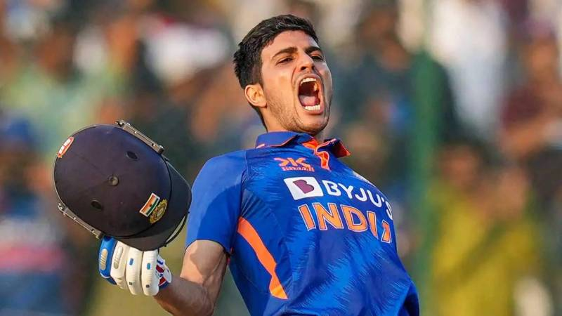
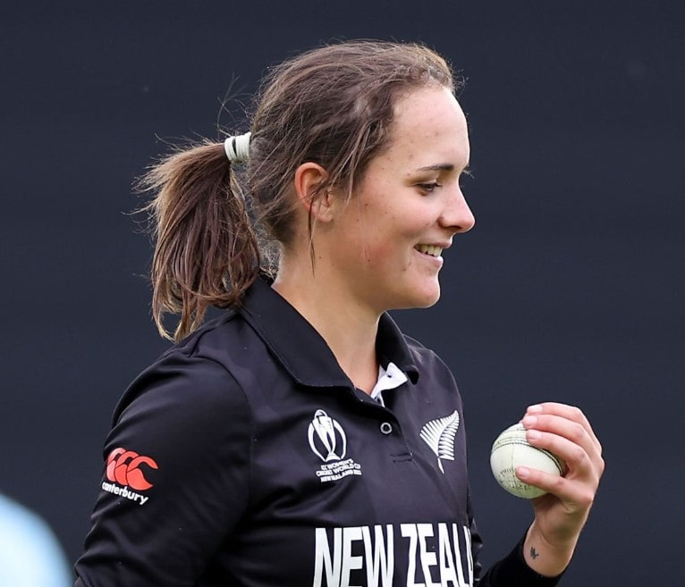
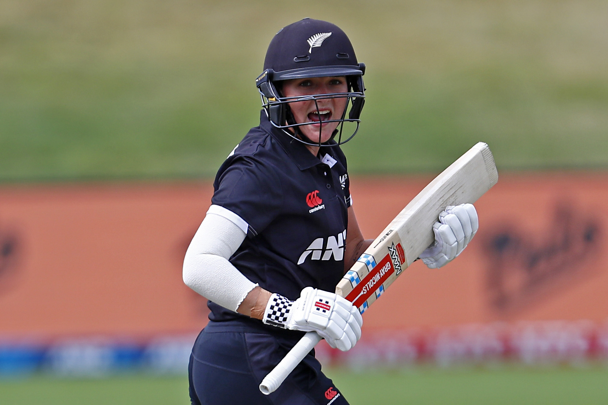
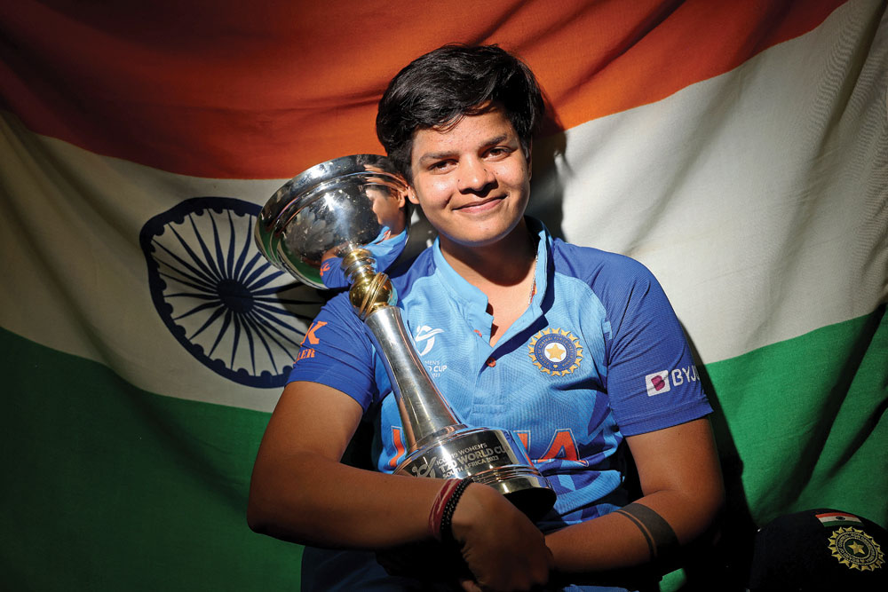
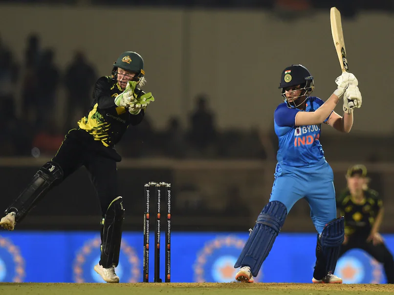

The Best Upcoming Cricket Players
Dewald Brevis
Dewald Brevis is a South African top order batsman who is lighting up the world in short formats before he is even turned 20. Brevis put the world on notice after scoring 506 runs. In 2022 under 19 World Cup, which led to a franchise in India named Mumbai Indians snapping him for 504k dollars. He made a decent first impression scoring 49 runs in 25. Later that year, he made a mammoth total of 162 of 57 deliveries in cricket South Africa leagues, breaking all kinds of records such as the highest t20 score in South Africa and the 3rd best score in t20 ever.

Shubman Gill

Shubman Gill is an exciting Indian batsman opener who has showcased his skills in both domestic and international cricket. He is dominating the international scene at just 23 years old. In 2019 he had scored 990 runs in just 14 matches in first class. He made his international debut weeks later. He is known for his elegant stroke play and has a bright future ahead.

Amelia kerr

Amelia Charlotte Kerr is a New Zealander allrounder who has shown her talent with the bat and with the bowl. She started her cricketing journey at the age of 16. She picked up 6 wickets in 4 matches, however her best performance was against Australia picking 4 crucial wickets, though New Zealand lost, Kerr had announced herself to the world. At the age of 17 she had her best performance against Ireland in 2018, where she stunned the world and scored 232 runs and captured 5 wickets in hand. She has the potential to become a key player.

Shefali Verma

Shefali Verma is the youngest t20 cricketer ever to play for India. She is a young cricketer who has taken the cricketing world by storm with her aggressive batting style. Shefali Verma’s best performance that caught the selectors was during a domestic game. She scored an incredible 125 runs and had showcased her betting power and the ability to soccer big. She has already made a huge impact in international cricket and has a bright future ahead.
